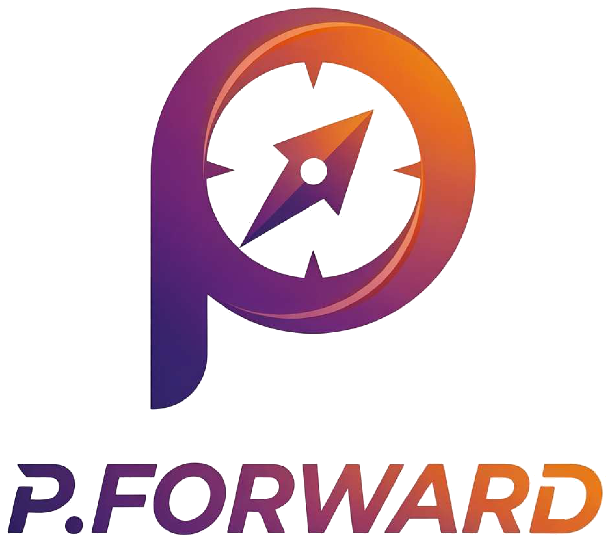

- POWER & PURPOSE -P.FORWARD ｜ POWER & PURPOSE
地方に新しい挑戦と、熱狂を！
地方に、新しい挑戦と
熱狂を生み出す。
地域に人を呼び、地域に雇用を作り、地域にワクワクを生み出す。私たちは“攻め続ける会社”として、挑戦の熱量で地方を前へ動かします。
地方から、
日本の未来を動かす。
守りではなく、挑戦。現状維持ではなく、前進。「地方だからできない」ではなく「地方から新しい価値を作る」。香住から、日本を代表するブランドを創ります。
P.FORWARD は、単なる飲食会社ではありません。香住・但馬の食文化と地域資源を、高付加価値な体験・観光・ブランドへ再編集し、地方から世界へ発信する、地域創生企業です。
香美町・香住エリアは、人口減少・観光競争・地域産業の衰退など、多くの地域課題を抱えています。一方で、まだ世界に届いていない価値が、数多く残されています。
香住ガニ、松葉ガニ、漁港文化、日本海の自然、そして職人の技術。これらを単なる「食材」に留めず、「体験価値」へと転換し、地域経済・観光・雇用の創出へつなげます。
「食」を起点に、観光・体験・ブランドへ。地方創生の最前線で、新しい価値を生み出す6つの事業を展開します。
香住ガニを主役に、エンターテインメント型の食体験を提供。高付加価値な飲食ブランドを生み出します。
漁港文化や日本海の自然を活かし、地域に人を呼び込む観光の仕組みをデザインします。
食を中心とした旅。漁港ツアー・競り見学・地酒ペアリングなど、地域回遊を創出します。
地域資源を磨き上げ、全国・世界に通用するブランドへと育てていきます。
炭焼き・浜茹で・蟹捌きなど、その地でしか味わえない体験を商品化します。
日本文化・炭火・蟹・地方体験を武器に、海外富裕層を地域へ誘致します。
焼き蟹を主軸としたエンターテインメント型の蟹料理店。ブランド認知の獲得とインバウンド集客を起点に、高付加価値な焼き蟹市場を確立します。「地方の未来を前に進める」、その第一歩です。
加工・飲食・体験・観光を融合した、高付加価値型の蟹体験施設。浜茹で・炭焼き・蟹捌き・漁港文化体験を通じ、地域食文化の高付加価値化と地域雇用の創出を目指します。
香住・但馬の食文化・漁業文化・自然を活用した体験型観光事業。宿泊連携・地域回遊・海外富裕層誘致へと広げ、持続可能な地域経済の構築へつなげます。
P.FORWARD は、丸近グループ3社のなかで「新規事業・地方創生」を担います。基盤を支える 丸近、世界へ挑む KANIZA とともに、「地方から、世界へ。」を目指します。
グループの基盤。
水産加工・卸・通販・供給・品質管理。
新規事業・地方創生。
観光・新業態・地域事業・挑戦領域。
世界向け飲食ブランド。
高級和食・ブランド店舗・国内外展開。
私たちはこれまで、香住という地域で「蟹」を軸に歩んできました。しかしこれからは、単に“商品を売る会社”ではなく、「地域の未来を創る会社」でなければ、生き残れない。
「地方だからできない」ではなく、「地方から新しい価値を作る」。地域に人を呼び、雇用を作り、ワクワクを生み出す。
食で感動を創り、幸せをつなぐ。香住という地方から、日本を代表するブランドを創る。それが、私たちの挑戦です。